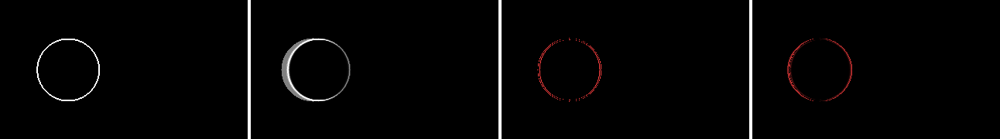
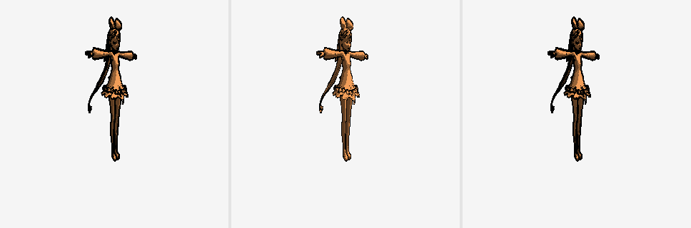
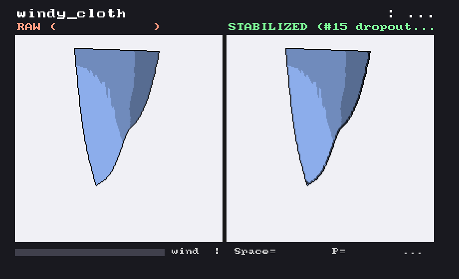
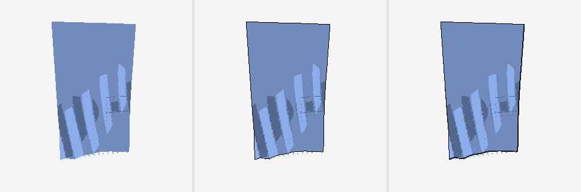

NPR 輪郭線の時間安定化
TAA の考え方（motion vector で前フレームを再投影して合成する）を、色ではなくトゥーンの輪郭線に応用してみた実験です。
3D から自動生成した輪郭線はアニメーションさせるとチラつきやすい、という題材に対して、 motion vector・objectId バッファ・輪郭抽出・時間安定化までを 自作エンジンに一式実装して、 定量計測と比較デモを作りました。
作ったもの
- G-buffer への motion vector / objectId チャネルと前フレーム保持（double-buffer）
- 深度段差 + 法線の折れによる screen-space 輪郭抽出
- 再投影 + 履歴検証による時間安定化（EMA 方式と、線の芯を保つ dropout-filling 方式の 2 種、CPU/GPU 両実装）
- 変形メッシュの per-vertex velocity、glTF/VRM 読み込み、線幅などのスタイライズ後処理
チラつき（フレーム間の再投影残差）で −63%、線幅ジッタで −67% など、各段階は自動テストで数値ごと固定してあります。

デモ
VRM モデルのターンテーブル比較
ニコニ立体ちゃん（©dwango）を VRM から読み込み、業界定番の背面法アウトラインと screen-space 内側線を組み合わせて比較。ピッチ × ヨーの多視点を事前レンダリングして、 ブラウザでドラッグ回転・ズームできるビューアも作りました。

リアルタイム布デモ（Game DLL）
布のシワのような「変形で動的に生まれる線」は、背面法では描けずテクスチャにも事前に描けない、 screen-space 検出ならではの領域です。Verlet 質点ばねの布にランダムな突風を当てる リアルタイムデモをエンジンの Game DLL として実装し、無安定化と安定化を並べて表示しています。

